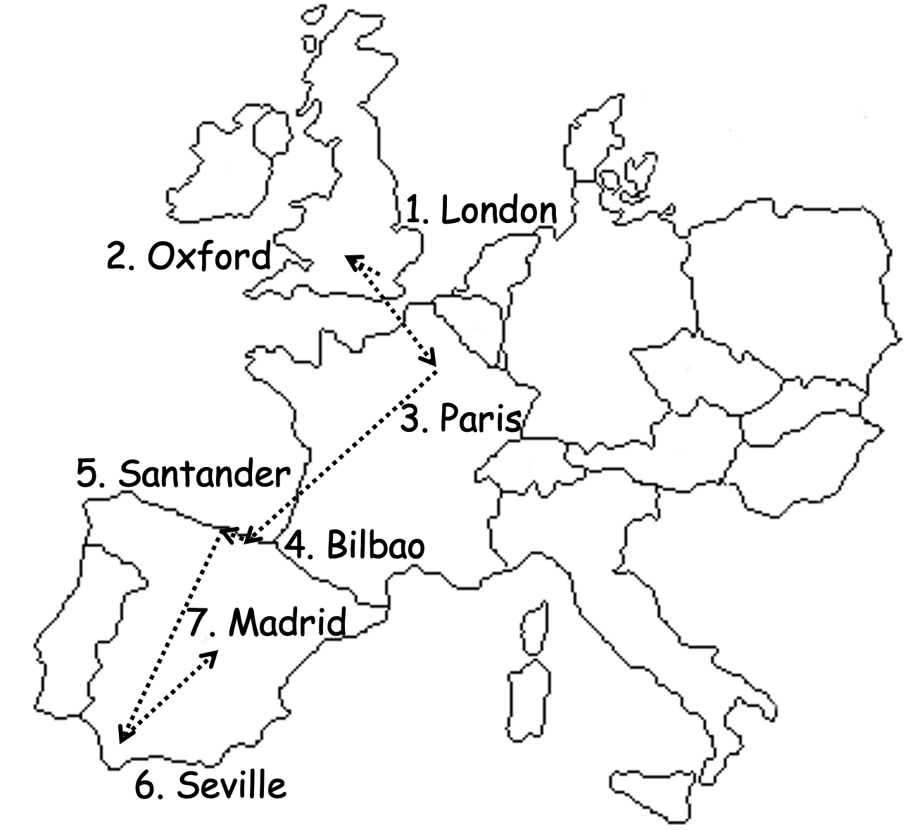

This is an auditory reflection of my travels in Europe, July 1st-July 20th, 2022.
—Fr. Martin Laird
0. Pre-departure
"Night is called 'black light,' light that is black because of the excess of its glow." —Seyyed Hossein Nasr
"We come from silence, but we are in sound; it is through sound that we go back to God." —Seyyed Hossein Nasr
"We are in this world because the primal silence was broken by the sacred silence itself; otherwise there would be no world. But that primordial silence, which somehow always remains in the sound of its own creation, had provided for us the means of returning unto it through the Divine sound. And one of the concomitance of this, is the realization of who we are...that our self is the Self of all selves. And this is the metaphysical foundation for all compassion. And so no matter how a great a metaphysician one is, how great a thinker, there is no gate to Heaven without compassion; there is no blessed soul without silence." —Seyyed Hossein Nasr
1. London
"Night is...black light: light that is black because of the excess of its manifestation."
2. Oxford
3. Paris
4. Bilbao
5. Santander
6. Seville
7. Madrid
A few pictures...
image
image
image